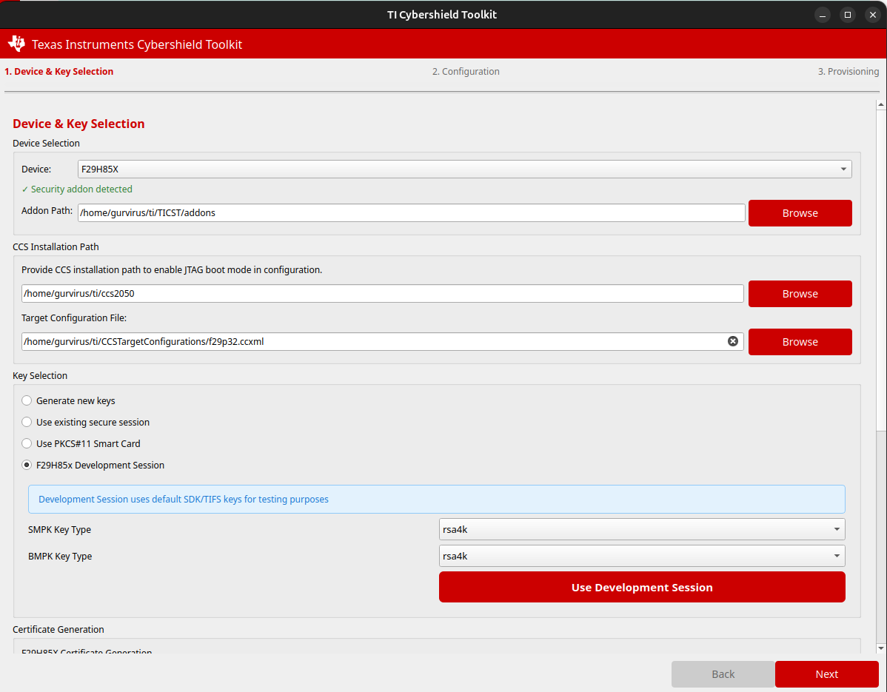
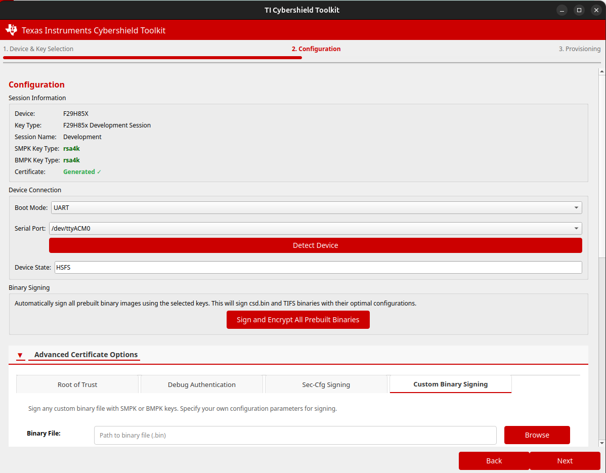
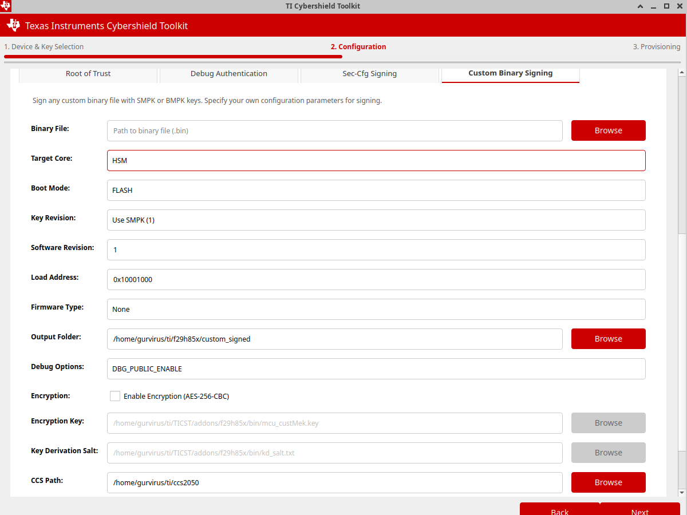
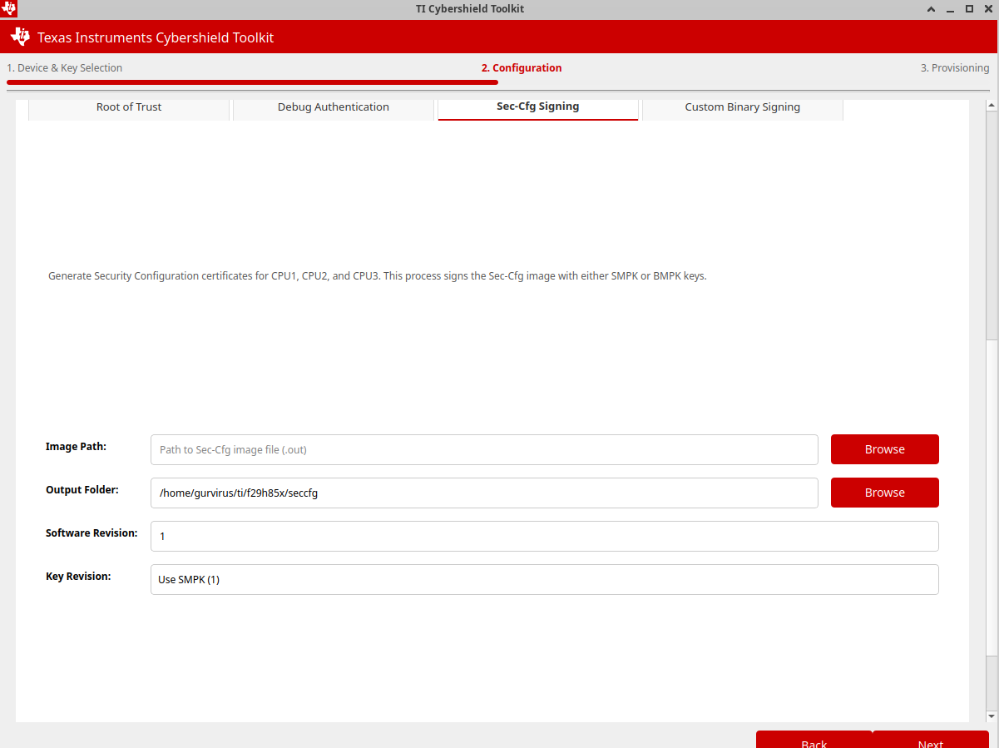
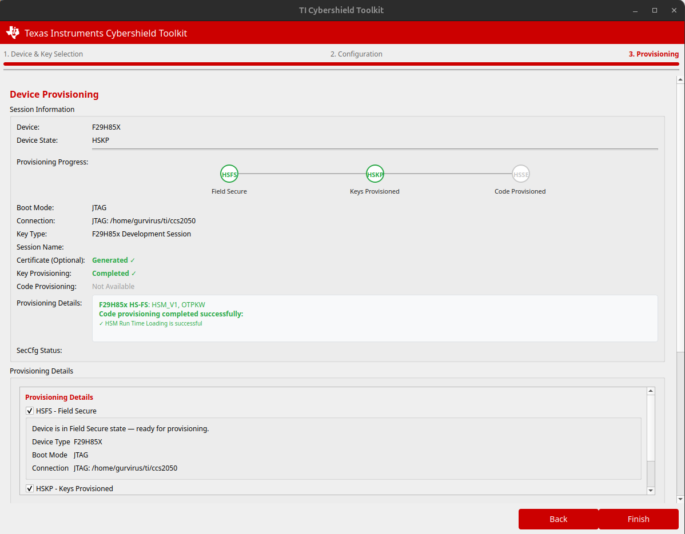
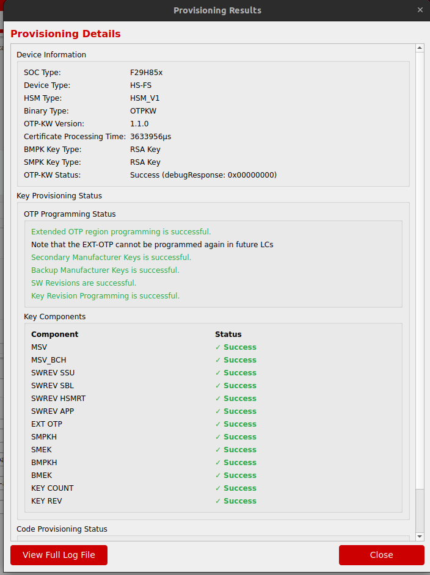

5 : GUI Reference
This section provides a reference guide to the TI Cybershield Toolkit graphical user interface.
5.1 Workflow Overview
To launch the GUI, run the following command in your terminal:
cstgui
The CST GUI workflow consists of three main steps:
Device & Key Selection - Select device and configure key options
Configuration - Set up connection and device parameters
Provisioning - Perform key and code provisioning operations
5.2 Device & Key Selection
{kind=link}

This page configures device type and key management options:
- Device Selection:
Device family: F29H85x
- Key Management:
New Keys: Generate RSA4K keys locally using OpenSSL and store in a password-protected folder
Existing Keys: Access keys from a previously created session folder
SDK Dummy Keys: Use TI Developer keys for testing and development
PKCS#11 Smart Card: Use an HSM smart card for key operations
- Configuration Options:
CCS Path: Required for JTAG-based provisioning
Certificate Parameters: Model-specific values, key protection options
5.2.1 Certificate Generation in the GUI
The certificate generation workflow is accessed from the “Device & Key Selection” page after selecting a device and key type. Configure the following parameters before generating:
- Certificate Parameters:
MSV (Model Specific Value): Customer-defined hexadecimal value (e.g.,
0x1E22D)Software Revisions: Set sr_sbl, sr_hsmRT, sr_app, sr_ssu (typically
1for initial provisioning)Key Count:
1(SMPK only) or2(SMPK + BMPK)Key Revision:
1(use SMPK) or2(use BMPK) as the active signing key
Advanced Settings (click the Advanced Settings button in the Certificate Generation tab):
TI FEK Public Key: Required only when the secure binaries addon is not installed. The TI FEK is TI-owned and fixed per device family — customers do not generate this key. If the addon is installed, the correct key is detected automatically.
Device SR Version: Must match your silicon revision —
SR_10for Rev A devices,SR_20for Rev B and Rev C devices.Write Protection: Enable
Enable Write Protectionfor SMPK/SMEK/BMPK/BMEK to prevent future key modification after provisioning.
Note
The X.509 certificate is signed by the customer’s Secondary Manufacturer Private Key (SMPK private). See 3 : Certificate Generation for full details on the certificate generation process.
5.3 Configuration
{kind=link}

Configure device connections and verify device state:
- Connection Options:
UART: Serial port connection
JTAG: Debug probe connection
- Device State Detection:
Automatically detects if device is in HS-FS, HS-KP, or HS-SE state
Shows compatibility with selected provisioning operation
- Certificate Status:
Displays certificate parameters and validation status
5.3.1 Custom Binary Signing
{kind=link}

The Custom Binary Signing tab (found under Advanced Certificate Options on the
Configuration page) allows users to sign and optionally encrypt their own custom binary
files (.bin) using their provisioned SMPK or BMPK keys. This is the alternative to
using the Sign and Encrypt All Prebuilt Binaries button — use this tab when you need
to sign binaries that are not part of the Security Addon prebuilt set.
Configurable fields:
Binary File: Path to the input binary (
.bin) file to be signedTarget Core: The core the binary targets —
HSMorC29Boot Mode: Boot mode for the signed image (e.g.,
FLASH)Key Revision: Which key to sign with —
Use SMPK (1)orUse BMPK (2)Software Revision: Software revision value embedded in the signed image header
Load Address: Memory load address for the binary (e.g.,
0x10001000)Firmware Type: Firmware type identifier (leave as
Noneif not applicable)Output Folder: Directory where the signed (and optionally encrypted) output will be saved
Debug Options: Debug access level to embed (e.g.,
DBG_PUBLIC_ENABLE)Encryption: Enable AES-256-CBC encryption of the binary. When checked, provide:
Encryption Key: Path to the MEK key file (e.g.,
mcu_custMek.keyfrom the addon)Key Derivation Salt: Path to the key derivation salt file (e.g.,
kd_salt.txtfrom the addon)
CCS Path: Path to CCS installation (required when Target Core is
HSM)
Output formats:
The signed output file format depends on the selected Target Core:
HSM core →
.hsmimageC29 core →
.cert.bin
Note
The signing and encryption operations use the session keys selected on the Device & Key Selection page (page 1). Ensure you have selected the correct session before generating signed images.
Warning
Image Encryption Not Supported on SR_10 (Rev 0 / Rev A) Devices
Enabling the Encryption option is not supported on SR_10 (Rev 0 / Rev A) silicon. Using image encryption with these device revisions will result in failure during code provisioning. Ensure encryption is disabled when targeting SR_10 devices. Contact a TI representative for more information.
5.3.2 Sec-Cfg Signing
{kind=link}

The Sec-Cfg Signing tab generates signed Security Configuration certificates for CPU1, CPU2, and CPU3. The Sec-Cfg image is signed with either SMPK or BMPK keys (selected via Key Revision).
Configurable fields:
Image Path: Path to the Sec-Cfg image file (
.out) to be signedOutput Folder: Directory where the signed Sec-Cfg output will be saved
Software Revision: Software revision value to embed in the signed image
Key Revision:
Use SMPK (1)orUse BMPK (2)
Note
A prebuilt bankmode 0 Sec-Cfg binary is included in the Security Addon package at
~/ti/TICST/addons/f29h85x/. If the addon is installed, this prebuilt Sec-Cfg can
be signed directly using this tab without needing to build your own.
5.3.3 Debug Authentication and Root of Trust
The Configuration page also provides two additional advanced certificate tabs:
Debug Authentication — Generates a debug certificate that controls JTAG debug access levels on a provisioned device. Used to re-enable or restrict debug access post-provisioning.
Root of Trust — Generates a Root of Trust switching certificate that enables the device to switch between different Root of Trust key sets, allowing for key rotation in security-critical deployments.
Note
For detailed information on the use cases, parameters, and workflows for Debug Authentication and Root of Trust certificates, refer to the TIFS F29 SDK documentation.
5.4 Provisioning
{kind=link}

Execute key and code provisioning operations:
- Key Provisioning:
- File inputs:
OTP keywriter binary
Flash kernel (UART/JTAG)
Certificate
Connection settings (port or CCS path)
Execution controls for initiating provisioning
Note
The secure binaries addon as part of 26.00.00_STS includes only the SR_10 (Rev A) OTP Keywriter binary.
Users with Rev B or Rev C silicon (SR_20) must obtain the SR_20-specific OTP Keywriter binary separately from the SBL Keywriter package. Contact a TI representative for more information.
- Code Provisioning:
- Component selection:
HSM image (required)
HSM CPU code (optional)
C29 CPU code (optional)
Security configuration (required for HS-KP devices)
Connection settings
Execution controls
- Device State Visualization:
Shows progression from HS-FS to HS-KP to HS-SE states
Indicates current device state and provisioning status
5.4.1 Automated CLI Script Generation

When you click the Finish button after completing provisioning, the CST GUI automatically generates a bash shell script that reproduces every step performed in the wizard as equivalent CLI commands.
What is generated
The script is saved to:
~/ti/<device>/provision_<device>.sh
For example, after an F29H85x JTAG session:
~/ti/f29h85x/provision_f29h85x.sh
The script contains the following steps in order:
gencert — Generate the OTP certificate with all configured parameters
signapp — Sign each prebuilt binary (HSM image, SBL, secure boot manager, etc.)
signSecCfg — Sign the security configuration file
jtag_codeprov / uart_codeprov — Run code provisioning with all selected images
Running the script
The script accepts the CLI binary path as its first argument:
# Use TI_CST_CLI if it is on your PATH
./provision_f29h85x.sh
# Or pass the full path to the CLI binary
./provision_f29h85x.sh /path/to/TI_CST_CLI
For HSM-session scripts (non-development keys), the session name and password are also required:
./provision_f29h85x.sh /path/to/TI_CST_CLI MySession MyPassword
Note
For development key sessions (F29H85x SDK/f29_development keys), no session name or password arguments are needed — the signing algorithm flags are embedded directly.
Note
The script is saved one directory level above the certificate output directory so that re-running gencert (which clears the certificates folder) does not delete the script.
Warning
The --image paths in the signapp steps point to the standard prebuilt binaries
directory (~/ti/tisecprov/host/bin/asm/<device>/). If you used custom binaries from
a different location, edit those paths in the script before re-running.
5.5 Advanced Options
Each operation provides advanced configuration:
- UART Options:
Serial port and baud rate
Binary file paths
Special command parameters
- JTAG Options:
CCS configuration
Debug probe settings
Binary file paths
- Provisioning Parameters:
Component selection parameters (3,5,6,7)
Special operating modes
Timeout controls
5.6 Results and Diagnostics
{kind=link}

After operations complete:
- Operation Results:
Success/failure status
Device information
Component status
- Diagnostic Information:
Detailed operation logs
Error codes and descriptions
Save logs functionality for support